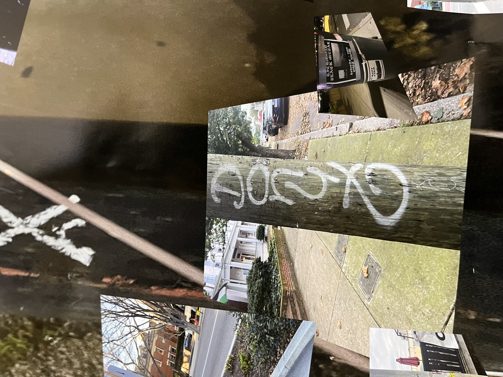
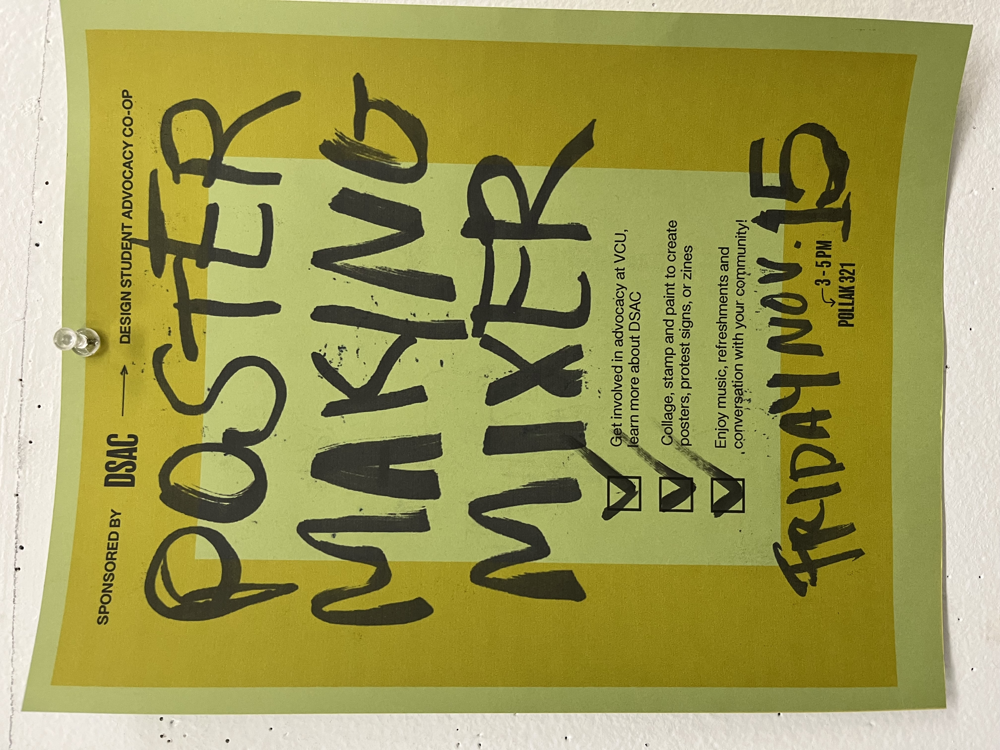
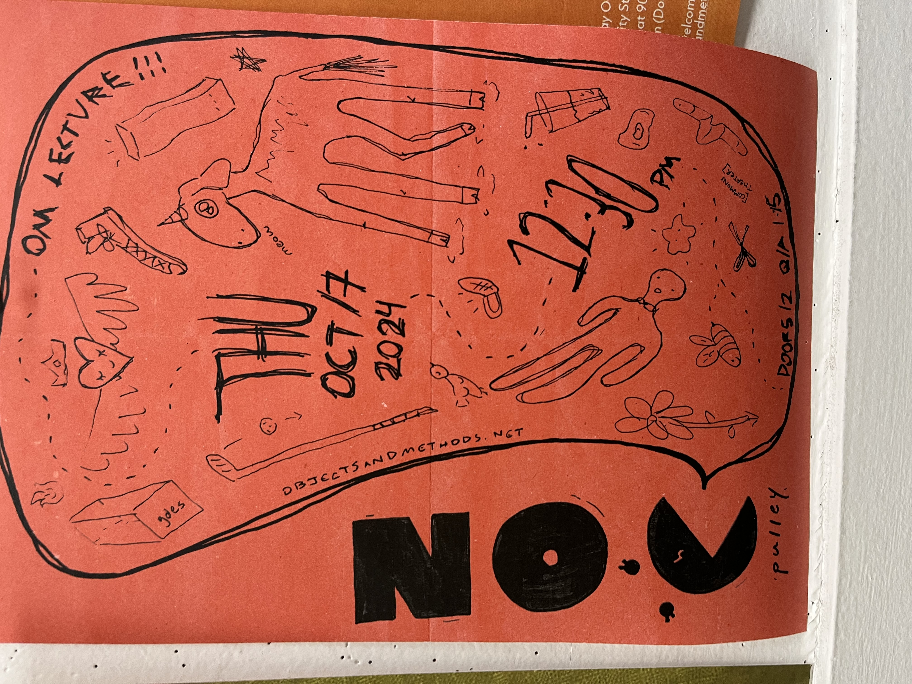
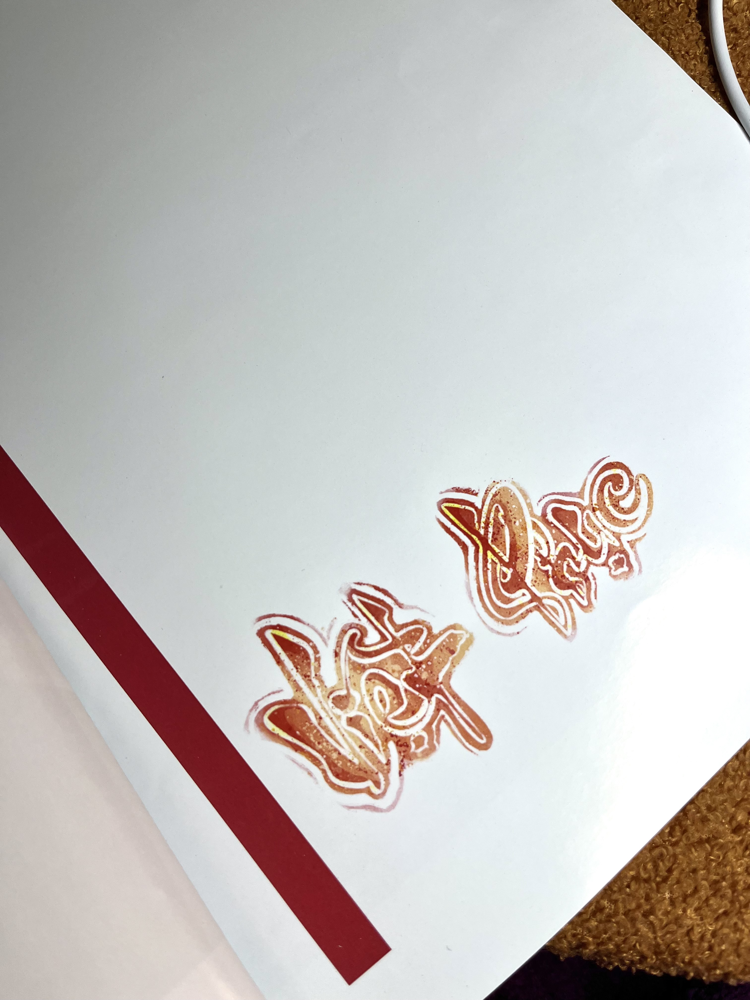
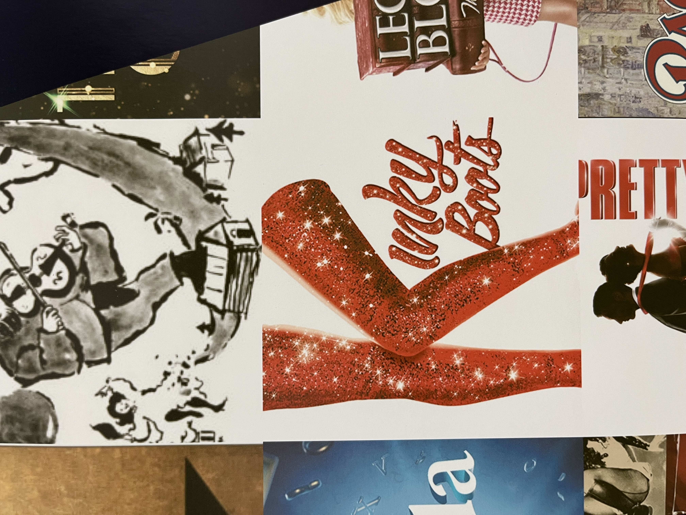
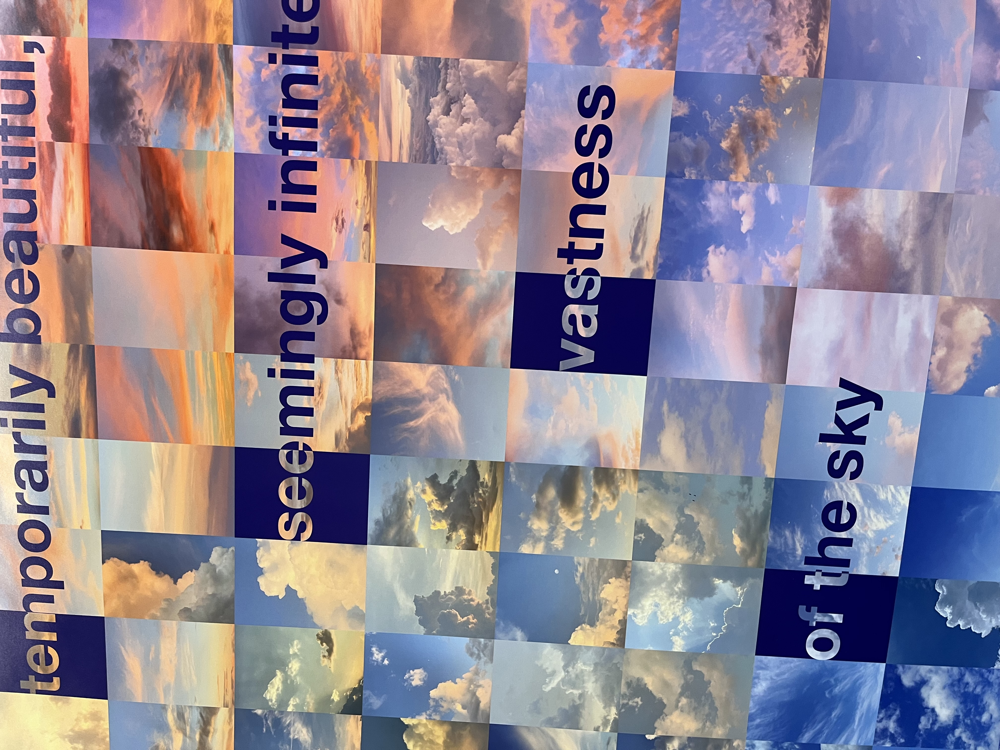

Letterforms, three ways (writing, lettering, & typography)
Week 13
Hoai Ngoc Vo
Writing

This was considered a piece of writing for me because each letter’s significant parts are made with a single stroke. I can clearly see the writer having a flow and using their hand to write these words on the page.

I had a hard time deciding whether this is writing or lettering, but I finally decided to classify it as writing. It is clear that the producer chose to write it by hand, as each part consists of a single stroke (except for part of number 15, where they made a mistake). The marker’s stroke texture checks all the boxes. However, I wasn’t sure if it was a photocopy or the original version. I decided it was writing because I noticed tiny ink dots around the letters, which typically occur when writing directly on paper and accidentally smearing it. Let’s hope this conclusion is correct.
Lettering

This type of lettering can easily confuse viewers, as it shares characteristics with handwriting—both have a handmade quality on paper or objects. The distinction lies in the fact that the letters in this poster were clearly created as images. You can see that each letter consists of more than one stroke. It’s more like drawing or sketching the letterforms (going over them multiple times with the tool) rather than creating them with a single consistent line.

It was a struggle to find examples of lettering these days, as most people create their designs digitally, leaning more toward typography that can be reproduced and mass-produced. Therefore, I had to refer to an example from my Core III midterm project, as I often incorporate drawing and painting habits into my graphic design work. The reason this is considered lettering and not typography is that these letters are painted with textures and multiple strokes to create an image—a watercolor-like feel—rather than being an exact copy of a typeface. It would be challenging for me to recreate this lettering from scratch because the spacing between the letters, the stroke weight, and the color placement will not be uniform.
Typography

This example is the most obvious to me. Although the filling of the text appears in an imagery genre, the choice basic type form with minimal alternative details or treatments gives it the look of typical digital typography. While the textures on the text might pose a slight challenge for exact placement, with the precise size and x, y coordinates provided by a program, one could replicate it quite similarly.

Even though I can see the writer's intention of using images as the filling for some parts of the text, it still stands as typography to me. I believe that, with a clear guide on the spacing and sizes of these letters, anyone could reproduce it. The creative intention to alter the appearance of the letters is not enough to break the uniformity and connection to their original form. Ultimately, the structured design and reproducibility of the text reinforce its identity as typography rather than breaking into the expressive, handcrafted realm of lettering. This distinction highlights how intent and execution can blur the lines between design categories, but certain core principles remain.
© 2024 Hoai Ngoc Vo